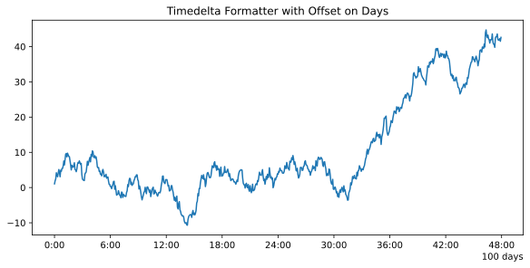

Formatters, locators and converters¶
Timple timedelta format¶
Timple represents timedeltas using floating point numbers. A value of 1.0 corresponds to a timedelta of 1 day.
There are two helper functions for converting between timedelta-like values and Timple’s floating point timedeltas.
Convert timedelta objects to Timple’s timedeltas. |
|
Convert number of days to a ~datetime.timedelta object. |
A wide range of specific and general purpose timedelta tick locators and
formatters are provided in this module.
You should check Matplotlib’s documentation for general information on tick
locators and formatters at matplotlib.ticker.
These tickers and locators are described below.
Timedelta tickers¶
The available date tickers are:
FixedTimedeltaLocator: Locate microseconds, seconds, minutes, hours or days (the ‘base unit’) in fixed intervals. Tick locations will always be multiples of the selected interval. E.g. if the interval is 15 and the base unit ‘seconds’, the locator will pick 0, 15, 30, 45 seconds as tick locations:loc = FixedTimedeltaLocator(base_unit='seconds', interval='15')
AutoTimedeltaLocator: On autoscale, this class picks the best base unit (e.g. ‘minutes’) and the best interval to set the view limits and the tick locations. Tick locations will always be a multiple of the chosen interval.
Timedelta formatters¶
The available date formatters are:
AutoTimedeltaFormatter: attempts to figure out the best format to use. This is most useful when used with the AutoTimedeltaLocator.ConciseTimedeltaFormatter: also attempts to figure out the best format to use, and to make the format as compact as possible while still having complete date information. The formatter will make use of axis offsets to shorten the length of the tick label when possible. This is most useful when used with the AutoTimedeltaLocator.TimedeltaFormatter: use custom timedelta format strings and a custom axis offset.
Timedelta format strings¶
Timple uses format strings to define the format of the tick labels and axis offset.
The format strings for timedeltas defined here are similar to datetime.datetime.strftime format strings but they are not the same and not compatible.
Directive |
Meaning |
Example |
|---|---|---|
|
The number of days |
0, 1, 2, … |
|
Hours up to one day (with zero-padding) |
00 … 23 |
|
Total number of hours |
0, 1, 2, …. 50, 51, … |
|
Minutes up to one hour (with zero-padding) |
00 … 59 |
|
Total number of minutes |
0, 1, 2, ….. 100, 101, … |
|
Seconds up to one minute (with zero-padding) |
00 … 59 |
|
Total number of seconds |
0, 1, 2, ….. 100, 101, … |
|
Milliseconds up to one second (with zero-padding) |
000 … 999 |
|
Microseconds up to one millisecond (with zero-padding) |
000 … 999 |
|
The string ‘day’ with correct plural |
‘day’ or ‘days’ |
The following two functions can be used to format timedelta values with a format string:
|
Return a string representing a timedelta, controlled by an explicit format string. |
|
Return a string representing a float based timedelta, controlled by an explicit format string. |
String formatting examples:
>>> import datetime
>>> fmt = "%d %day, %h:%m"
>>> td = datetime.timedelta(days=10, hours=6, minutes=14)
>>> strftimedelta(td, fmt)
10 days, 06:14
2.5 days as days and hours:
>>> fmt = "%d %day and %h:00"
>>> td = datetime.timedelta(days=2, hours=12)
>>> strftimedelta(td, fmt)
2 days and 12:00
2.5 days as hours only:
>>> fmt = "%H:00"
>>> td = datetime.timedelta(days=2, hours=12)
>>> strftimedelta(td, fmt)
60:00
Seconds with millisecond and microseconds as decimals:
>>> fmt = "%S.%ms%us seconds"
>>> td = datetime.timedelta(seconds=2, milliseconds=351, microseconds=16)
>>> strftimedelta(td, fmt)
2.351016 seconds
Timedelta converters¶
Timple provides two timedelta converters which can be registered through Matplotlib’s unit conversion interface (see matplotlib.units):
Converter for datetime.timedelta, numpy.timedelta64 and pandas.Timedelta data. |
|
Converter for datetime.timedelta, numpy.timedelta64 and pandas.Timedelta data (prefers short tick formats). |
Usually you don’t need to interact with these converters.
When enabling Timple, one of them is automatically registered with Matplotlib.
(see timple.timple)
The only difference between these converters is the default formatter that is used. ConciseTimdeltaConverter will use the ConsciseTimedeltaFormatter by default while TimedeltaConverter will use AutoTimedeltaFormatter.
API Reference¶
-
timple.timedelta.num2timedelta(x)[source]¶ Convert number of days to a ~datetime.timedelta object.
If x is a sequence, a sequence of ~datetime.timedelta objects will be returned.
- Parameters
x (float, sequence of floats) – Number of days. The fraction part represents hours, minutes, seconds.
- Returns
- Return type
datetime.timedelta or list[datetime.timedelta]
-
timple.timedelta.timedelta2num(t)[source]¶ Convert timedelta objects to Timple’s timedeltas.
- Parameters
t (datetime.timedelta, numpy.timedelta64 or pandas.Timedelta) – or sequences of these
- Returns
Number of days
- Return type
float or sequence of floats
-
class
timple.timedelta.TimedeltaFormatter(fmt, *, offset_on=None, offset_fmt=None, show_offset_zero=True, usetex=None)[source]¶ Bases:
matplotlib.ticker.FormatterFormat a tick (in days) with a format string or using as custom .FuncFormatter.
This .Formatter formats ticks according to a fixed specification. Ticks can optionally be offset to generate shorter tick labels.
Note
The format strings for timedeltas work similar to datetime.datetime.strftime format strings but they are not the same and not compatible.
Examples
Example plot:
import numpy as np import datetime import matplotlib.pyplot as plt import timple import timple.timedelta as tmpldelta tmpl = timple.Timple() tmpl.enable() base = datetime.timedelta(days=100) timedeltas = np.array([base + datetime.timedelta(minutes=(4 * i)) for i in range(720)]) N = len(timedeltas) np.random.seed(19680801) y = np.cumsum(np.random.randn(N)) fig, ax = plt.subplots(constrained_layout=True) locator = tmpldelta.AutoTimedeltaLocator() formatter = tmpldelta.TimedeltaFormatter("%H:%m", offset_on='days', offset_fmt="%d %day") ax.xaxis.set_major_locator(locator) ax.xaxis.set_major_formatter(formatter) ax.plot(timedeltas, y) ax.set_title('Timedelta Formatter with Offset on Days')
- Parameters
fmt (str or callable) – a format string or a callable for formatting the tick values
offset_on (str, optional) –
One of
('days', 'hours', 'minutes', 'seconds')Specifies how to offset large values; default is no offset. If
offset_onis set butoffset_fmtis not, the offset will be applied but not shown.offset_fmt (str or callable, optional) – A format string or a callable for formatting the offset string. This also requires
offset_onto be specified.show_offset_zero (bool, optional) – Show axis offset if the offset is zero.
usetex (bool, default: text.usetex from Matplotlib’s rcParams) – To enable/disable the use of TeX’s math mode for rendering the results of the formatter.
-
class
timple.timedelta.ConciseTimedeltaFormatter(locator, formats=None, offset_formats=None, show_offset=True, show_offset_zero=True, *, usetex=None)[source]¶ Bases:
matplotlib.ticker.FormatterA .Formatter which attempts to figure out the best format to use for the timedelta, and to make it as compact as possible, but still be complete. This is most useful when used with the AutoTimedeltaLocator:
>>> locator = AutoTimedeltaLocator() >>> formatter = ConciseTimedeltaFormatter(locator)
The formatter will make use of the axis offset. Depending on the tick frequency of the locator, the axis offset as well as the format for ticks and offset will be determined.
There are 5 tick levels. These are the same as the base units of the locator. The levels are
('days', 'hours', 'minutes', 'seconds', 'microseconds'). For each tick level a format string, an offset format string and the offset position can be specified. Else, the defaults will be used.- Parameters
locator (.Locator) – Locator that the axis is using.
formats (list of 5 strings, optional) –
Format strings for tick labels. The default is:
["%d %day", "%H:00", "%H:%m", "%M:%s.0", "%S.%ms%us"]
offset_formats (list of 5 tuples, optional) –
A combination of
(offset format, offset position)where the offset format is a format string similar to the tick format string. Offset position specifies on which level the offset should be applied. See theoffset_fmt=andoffset_on=arguments of TimedeltaFormatter. The default is:[(None, None), ("%d %day", "days"), ("%d %day", "days"), ("%d %day, %h:00", "hours"), ("%d %day, %h:%m", "minutes")]
For no offset, set both values of a level to None. To apply an offset but don’t show it, set only the format string to None.
show_offset (bool, default: True) – Whether to show the offset or not.
show_offset_zero (bool, optional) – Show axis offset if the offset is zero.
usetex (bool, default: text.usetex from Matplotlib’s rcParams) – To enable/disable the use of TeX’s math mode for rendering the results of the formatter.
-
class
timple.timedelta.AutoTimedeltaFormatter(locator, defaultfmt='%d %day, %h:%m', scaled=None, *, usetex=None)[source]¶ Bases:
matplotlib.ticker.FormatterA .Formatter which attempts to figure out the best format to use. This is most useful when used with the AutoTimedeltaLocator.
The AutoTimedeltaFormatter has a scale dictionary that maps the scale of the tick (the distance in days between one major tick) and a format string. The default looks like this:
self.scaled = { 1: "%d %day", 1 / HOURS_PER_DAY: '%d %day, %h:%m', 1 / MINUTES_PER_DAY: '%d %day, %h:%m', 1 / SEC_PER_DAY: '%d %day, %h:%m:%s', 1e3 / MUSECONDS_PER_DAY: '%d %day, %h:%m:%s.%ms', 1 / MUSECONDS_PER_DAY: '%d %day, %h:%m:%s.%ms%us', }
The algorithm picks the key in the dictionary that is >= the current scale and uses that format string. You can customize this dictionary by doing:
>>> locator = AutoTimedeltaLocator() >>> formatter = AutoTimedeltaFormatter(locator) >>> formatter.scaled[1/(24.*60.)] = '%M:%S' # only show min and sec
A custom .FuncFormatter can also be used. See AutoDateLocator for an example of this.
- Parameters
locator (.Locator) – Locator that this axis is using
defaultfmt (str) – The default format to use if none of the values in
self.scaledare greater than the unit returned bylocator._get_unit().usetex (bool, default: text.usetex from Matplotlib’s rcParams) – To enable/disable the use of TeX’s math mode for rendering the results of the formatter. If any entries in
self.scaledare set as functions, then it is up to the customized function to enable or disable TeX’s math mode itself.scaled (dict, optional) – Allows to overwrite the scaled instance attribute at creation. The default values are updated with the values of this argument. You can therefore only add or modify exisiting key-value pairs through this argument.
-
class
timple.timedelta.TimedeltaLocator[source]¶ Bases:
matplotlib.ticker.MultipleLocatorDetermines the tick locations when plotting timedeltas.
This class is subclassed by other Locators and is not meant to be used on its own.
-
base_units¶ list of all supported base units
By default those are:
self.base_units = ['days', 'hours', 'minutes', 'seconds', 'microseconds']
- Type
list
-
base_factors¶ mapping of base units to conversion factors to convert from the default day representation to hours, seconds, …
- Type
dict
-
-
class
timple.timedelta.AutoTimedeltaLocator(minticks=5, maxticks=None)[source]¶ Bases:
timple.timedelta.TimedeltaLocatorThis class automatically finds the best base unit and interval for setting view limits and tick locations.
- Parameters
minticks (int) – The minimum number of ticks desired; controls whether ticks occur daily, hourly, etc.
maxticks (dict or int) – The maximum number of ticks desired; controls the interval between ticks (ticking every other, every 3, etc.). For fine-grained control, this can be a dictionary mapping individual base units (‘days’, ‘hours’, etc.) to their own maximum number of ticks. This can be used to keep the number of ticks appropriate to the format chosen in AutoDateFormatter. Any frequency not specified in this dictionary is given a default value.
-
intervald¶ Mapping of tick frequencies to multiples allowed for that ticking. The default is
self.intervald = { 'days': [1, 2, 5, 10, 20, 25, 50, 100, 200, 500, 1000, 2000, 5000, 10000, 20000, 50000, 100000, 200000, 500000, 1000000], 'hours': [1, 2, 3, 4, 6, 8, 12], 'minutes': [1, 2, 3, 5, 10, 15, 20, 30], 'seconds': [1, 2, 3, 5, 10, 15, 20, 30], 'microseconds': [1, 2, 5, 10, 20, 50, 100, 200, 500, 1000, 2000, 5000, 10000, 20000, 50000, 100000, 200000, 500000, 1000000], }
The interval is used to specify multiples that are appropriate for the frequency of ticking. For instance, every 12 hours is sensible for hourly ticks, but for minutes/seconds, 15 or 30 make sense.
When customizing, you should only modify the values for the existing keys. You should not add or delete entries.
Example for forcing ticks every 3 hours:
locator = AutoTimedeltaLocator() locator.intervald['hours'] = [3] # only show every 3 hours
For forcing ticks in one specific interval only,
FixedTimedeltaLocatormight be preferred.- Type
dict
-
tick_values(vmin, vmax)[source]¶ Return the values of the located ticks given vmin and vmax.
Note
To get tick locations with the vmin and vmax values defined automatically for the associated
axissimply call the Locator instance:>>> print(type(loc)) <type 'Locator'> >>> print(loc()) [1, 2, 3, 4]
-
nonsingular(vmin, vmax)[source]¶ Given the proposed upper and lower extent, adjust the range if it is too close to being singular (i.e. a range of ~0).
-
get_locator(vmin, vmax)[source]¶ Create the best locator based on the given limits.
This will choose the settings for a
matplotlib.ticker.MultipleLocatorbased on the available base units and associated intervals. The locator is created so that there are as few ticks as possible but more ticks than specified with min_ticks in init.- Returns
- Return type
instance of
matplotlib.ticker.MultipleLocator
-
class
timple.timedelta.FixedTimedeltaLocator(base_unit, interval)[source]¶ Bases:
timple.timedelta.TimedeltaLocatorMake ticks in an interval of the base unit.
Examples:
# Ticks every 2 days locator = TimedeltaLocatorManual('days', 2) # Ticks every 20 seconds locator = TimedeltaLocatorManual('seconds', 20)
- Parameters
base_unit ({'days', 'hours', 'minutes', 'seconds', 'microseconds'}) –
interval (int or float) –
-
class
timple.timedelta.TimedeltaConverter(formatter_args=None)[source]¶ Bases:
matplotlib.units.ConversionInterfaceConverter for datetime.timedelta, numpy.timedelta64 and pandas.Timedelta data.
The ‘unit’ tag for such data is None.
- Parameters
formatter_args (dict, optional) – A dictionary of keyword arguments which are passed on to
AutoTimedeltaFormatterinstances.
-
class
timple.timedelta.ConciseTimedeltaConverter(formatter_args=None)[source]¶ Bases:
timple.timedelta.TimedeltaConverterConverter for datetime.timedelta, numpy.timedelta64 and pandas.Timedelta data (prefers short tick formats).
The ‘unit’ tag for such data is None.
- Parameters
formatter_args (dict, optional) – A dictionary of keyword arguments which are passed on to
ConciseTimedeltaFormatterinstances.